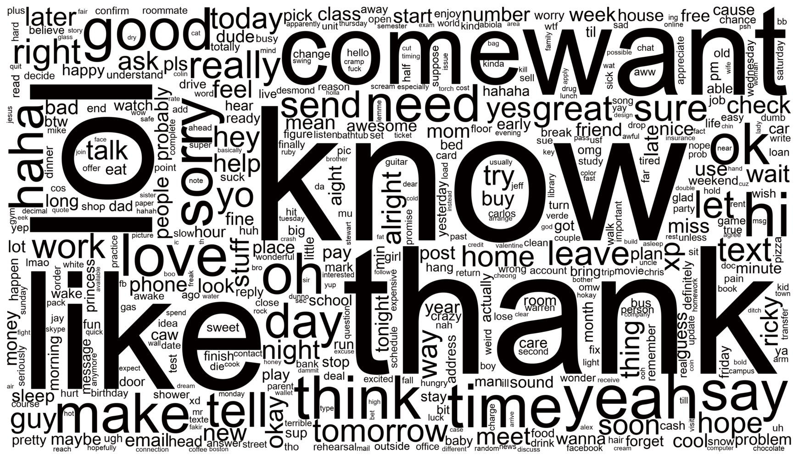
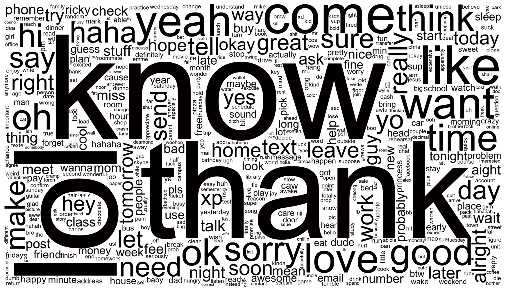
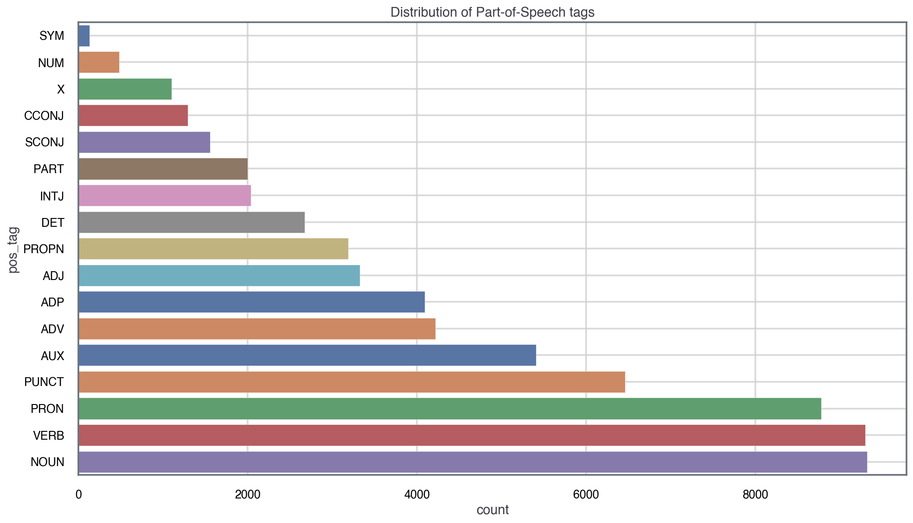

In the first part of this Natural Language Processing (NLP) series, I pre-processed a SMS dataset using spaCy. In this post, I’ll use the Python library sklearn to extract some insights from the dataset.
Because we have a text-based dataset, we need to turn words into numerical objects to carry out our analysis. This leads us to the concept of vectorisation.
Vectorisation
In NLP, vectorisation is the process of mapping words in the corpus to numerical features so that we can more easily analyse the dataset mathematically - either by means of a statistical analysis or by feeding the vector into a Machine Learning algorithm. In this post I won’t be using any Machine Learning Algorithms.
Bag-of-Words (BOW)
When it comes to vectorising the corpus (text-dataset), the most naive approach is to create a Bag-of-Words through the CountVectorizer() object. This technique counts the number of times a lemma appears in the corpus. Once we have the number of counts for each lemma, we can go ahead and build a wordcloud to visualise what lemmas are most common in these SMS messages. Wordclouds give more weight to words that appear more frequently by scaling them up in size.
As mentioned above, we’ll use sklearn to carry out the vectorisation:
1
2
3
4
5
6
7
8
9
10
11
12
13
14
15
16
17
import numpy as np
from sklearn.feature_extraction.text import CountVectorizer, TfidfVectorizer
from wordcloud import WordCloud
# create CountVectorizer() object and generate bow matrix
count_vectorizer = CountVectorizer(
lowercase=True,
stop_words='english',
ngram_range=(1,1)
)
bow_matrix = count_vectorizer.fit_transform(lemmas)
feature_names_bow = count_vectorizer.get_feature_names_out()
# get word count to create a wordcloud
word_count = np.asarray(bow_matrix.sum(axis=0)).ravel().tolist()
wcount_dict = {word: count for word, count in zip(feature_names_bow, word_count)}
1
2
3
4
5
6
7
8
9
10
11
12
13
14
15
16
17
18
19
20
21
22
23
24
25
26
27
def black_color_func(word, font_size, position, orientation, random_state=None, **kwargs):
return("hsl(0,100%, 1%)")
def make_wordcloud(
x,
bg_color='white',
cloud_width=3500,
cloud_height=2000,
maxwords=500
):
plt.figure(figsize=(16,9))
cloud = WordCloud(
font_path='./data/arial-unicode-ms.ttf',
background_color=bg_color,
width=cloud_width,
height=cloud_height,
max_words=maxwords)
cloud.generate_from_frequencies(x)
cloud.recolor(color_func = black_color_func)
plt.imshow(cloud, interpolation="bilinear")
plt.axis("off")
plt.show()
# build wordcloud
make_wordcloud(wcount_dict)

Interesting! Some of the words that come up most often across all the corpus are ‘thank’, ‘know’, ‘good’, ‘come’, ‘night’, … This is quite intuitive as these seem very common words one would use in short-format messaging (e.g. ‘thank you’, ‘I’m coming’, ‘I think so’, …)
Term Frequency Inverse-Document Frequency (TF-IDF)
A less naive approach to capture important words is the Term Frequency Inverse-Document Frequency (tf-idf). Unlike a classical bag-of-words approach, tf-idf takes into account the number of documents in the corpus that contain each words. This helps highlight more special words that are common only in very few documents, and weighs down very common words across all documents. For more information on how TF-IDF is calculated, see its Wikipedia article here.
1
2
3
4
5
6
7
8
9
10
11
12
13
14
15
16
17
18
# create TfidfVectorizer() object and generate tfidf sparse matrix
tfidf_vectorizer = TfidfVectorizer(
stop_words='english',
lowercase=True)
tfidf_matrix = tfidf_vectorizer.fit_transform(lemmas)
feature_names_tfidf = tfidf_vectorizer.get_feature_names_out()
# get word count to create a wordcloud
weight_count = np.asarray(tfidf_matrix.sum(axis=0)).ravel().tolist()
tfidf_count = np.array(weight_count)*np.array(word_count)
if np.all(feature_names_tfidf == feature_names_bow):
tfidf_dict = {word: count for word, count in zip(feature_names_tfidf, tfidf_count)}
# build tfidf wordcloud
make_wordcloud(tfidf_dict)

Very similar to the BOW approach! We can see that some words like ‘hi’ become less important while other words like ‘yeah’ and ‘lol’ become more relevant, which is surprising as I’d expected these words to still be very frequent across all SMS.
Part-of-Speech (POS) tagging
Making use of the spacy.nlp() pipeline which we created in part I, we can do more sophisticated analysis like Part-of-Speech tagging (POS). Loosely speaking, POS can be described as the process of capturing context in a corpus by labelling the words in the corpus according to the element of speech they belong to (noun, adjective, adverb, …).
The pos tags were extracted and computed while pre-processing the data, but we can make a dataframe to make it clearer. Originally, I set out to build the df_pos in the following way:
1
2
3
4
5
6
7
8
pos_dict = {word:tag for d_i in pos_tags for word, tag in d_i.items()}
df_pos = pd.DataFrame.from_dict({
'word': pos_dict.keys(),
'pos_tag': pos_dict.values()
})
print(df_pos.sample(n=5, random_state=5))
print(f'dataframe entries: {len(df_pos)}')
1
2
3
4
5
6
7
word pos_tag
4654 fee NOUN
942 repair NOUN
2650 himself PRON
1104 spent VERB
4361 goot NOUN
dataframe entries: 7888
However, this won’t work because dictionaries can’t have duplicate keys, so our dataframe will only have one entry per fixed word. Instead, we can use a list of tuples to create the POS dataframe:
1
2
3
4
5
6
pos_data = [(word,tag) for d_i in pos_tags for word, tag in d_i.items()]
df_pos = pd.DataFrame(pos_data, columns=['word', 'pos_tag'])
df_pos['word'] = df_pos['word'].str.lower() # make all the words lowercase for a more fair count
print(df_pos.sample(n=5, random_state=5))
print(f'dataframe entries: {len(df_pos)}')
1
2
3
4
5
6
7
word pos_tag
33998 ? PUNCT
7390 when SCONJ
60175 because SCONJ
58601 amused VERB
61726 it PRON
dataframe entries: 65359
And we see that it has almost x10 more entries than if we were storing the data in a dict.
Now we can extract some basic insights, for example the distribution of tags along the corpus:
1
2
3
4
5
6
7
8
9
10
11
12
13
14
15
df_count_pos = df_pos.groupby('pos_tag')['pos_tag'].count().\
reset_index(name='count').sort_values(['count'],ascending=True).reset_index(drop=True)
# create histogram with pos_tag distribution
fig, ax = plt.subplots(figsize=(16,9))
sns.barplot(
data=df_count_pos,
y='pos_tag',
x='count',
palette=COLORS
)
plt.title('Distribution of Part-of-Speech tags')
plt.grid(True)
plt.show()

Interestingly, we see that pronouns, verbs and nouns dominate in the corpus. This might be a proxy to the short-nature of SMS, since the messages have to be direct and for exmaple contain a high density of ‘I’, ‘you’, ‘we’, …, etc.
Another thing we can look at is at the top 10 most frequent adjectives. This might gives us a sense of the overall sentiment of the corpus:
1
2
3
4
5
6
df_adj = df_pos[df_pos['pos_tag'] == 'ADJ']
df_adj_count = df_adj.groupby('word')['word'].count().\
reset_index(name='count').sort_values(['count'],ascending=False).reset_index(drop=True)
print(df_adj_count.sort_values('count', ascending=False).head(n=10))
1
2
3
4
5
6
7
8
9
10
11
word count
0 good 136
1 great 99
2 sorry 90
3 sure 90
4 new 61
5 much 57
6 other 55
7 last 49
8 more 45
9 free 44
As expected from the WordCloud above, ‘good’ is the most common adjective. Just from this very broad view, we can see that the sentiment of the most used words is quite positive.
Spotcheck
Now we’d like to see how well our POS approach is performing. For that, we can take the most frequent adjective (good), and see how it compares to the count in the BOW model.
1
2
3
4
5
6
7
8
9
10
11
12
13
14
df_bow = pd.DataFrame.from_dict({
'word': wcount_dict.keys(),
'count': wcount_dict.values()
}).sort_values('count', ascending=False)
print(f"BOW 'good' word counts: {df_bow[df_bow['word'] == 'good']['count'].values[0]}")
print(f"ADJ 'good' word counts: {df_adj_count[df_adj_count['word'] == 'good']['count'].values[0]}")
# create a spotcheck dataframe
df_spk = df_pos[(df_pos['word'] == 'good') & (df_pos['pos_tag'] != 'ADJ')]
print(df_spk)
print(f'dataframe entries in spotcheck dataframe: {len(df_spk)}')
print(f"# of 'good' entries missing: {df_bow[df_bow['word'] == 'good']['count'].values[0] - df_adj_count[df_adj_count['word'] == 'good']['count'].values[0] - len(df_spk)}")
1
2
3
4
5
6
7
8
9
10
11
12
13
14
15
16
17
18
19
BOW 'good' word counts: 182
ADJ 'good' word counts: 136
word pos_tag
3722 good INTJ
4058 good INTJ
9954 good INTJ
13146 good NOUN
13449 good NOUN
13619 good INTJ
15406 good INTJ
16990 good NOUN
29341 good INTJ
31037 good INTJ
33624 good NOUN
51220 good INTJ
51882 good INTJ
62734 good INTJ
dataframe entries in spotcheck dataframe: 14
# of 'good' entries missing: 32
We see that most of the instances of ‘good’ that are not classified as ADJ are classified as INTJ (interjection), which probably corresponds to messages where ‘good’ is the only word (e.g. ‘Good!’ as an answer to an SMS).
Also, it looks like there are 60 instances of the word ‘good’ that appear in the BOW model but not in the BOW model. This is most likely due to lemmatization. That is, the spacy.nlp() pipeline removing the ending of a word and transforming it into ‘good’ (e.g. ‘goodbye’, ‘goods’, …). To be more rigorous and test the validity of the en_core_web_sm model for SMS, I would have to do spotchecks for more words and drill down whether this might be due to lemmatization or other causes.
Summary & Conclusions
In this project I’ve used basic NLP tools from the spaCy and sklearn libraries to study the nature of SMS texts on a public dataset. I hope I’ve convinced you that even basic NLP tools are able to extract insights from SMS data. Here are the main take-aways from this analysis:
-
NLP is able to capture and quantify the short and colloquial nature of SMS: Through vectorization (using the
nltk.CountVectorizer()andnltk.TfidfVectorizer()models), the wordclouds show that the most dominant words in the SMS dataset are generic words such as ‘thank’, ‘know’, ‘good’ and colloquial words like ‘lol’, ‘haha’ or ‘hi’. -
Classical NLP tools don’t work too well with a variety of languages: Because most of the available models on
spacyare trained in one language only (English in the case ofen_core_web_sm), it’s difficult to apply a NLP analysis on SMS dataset from countries that have a rich variety of languages. This is what motivated me to only consider SMS from the US (as opposed to Singapore or India). -
SMS datasets are extremely sensitive to age bias: As described in Chen, T., Kan, MY. Creating a live, public short message service corpus: the NUS SMS corpus, the age distribution of collected SMS is corresponds mostly to an age group of between 18-24 years old (see figure 3 in the paper). The way people write SMS depends a lot on their demographic (i.e. younger people will write SMS differently than younger people) and therefore the results and conclusions from this analysis are most likely biased towards a younger demographic.
-
SMS is not really Natural Language: Unlike more formal text-based datasets (e.g. movie reviews or policy documents), SMS datasets are extremely loose in their use of language. Some equivalent words might not be captured by the model to be the same becuase they’re written different (e.g. ‘good’ vs. ‘gooood’) or some abbreviations might not be understood by the model (e.g. ‘lol’). This will affect the results we get from the NLP analysis since SMS is not really Natural Language in the written sense.
Further Opportunities
I will finish with some final remarks about how one could extend and enhance this analysis:
-
Language Detection: One interesting question we could ask is: What are the most frequently used words outside of the country’s official language? For example, it’d be interesting to study what words (outside of English) are used most frequently in the USA (I’d expect they’d be Spanish). We could use one of the many Python libraries to detect language (e.g.
spacy_langdetectorgoogletrans), filter out words in the official language(s) of the country, and run a similar vectorisation process as we did here. -
Alternative stratification/binning: In this case I binned the data based on the country. I could bin the data based on age, sex or language. The latter would be especially useful given that most available NLP tools in Python cannot handle multilingual datasets. However, age and sex binning wouldn’t be possible in this dataset because the researchers didn’t capture that information. Given that language is heavily influenced by demographics, an alternative binning might give us different results and conclusions.
-
Sentiment Analysis: In this project I used the POS-tagger to get a very basic sentiment for the USA subset of this SMS dataset. We could use more sophisticated ML models for sentiment analysis, such as the VADER model. However, one should be careful to jump on the ML-train as these models are normally trained in datasets of a different domain. Also, we will sacrifice interpretability as these models tend to be a black box.
-
Named Entity Recognition: In addition to using a POS-tagger, we could run a Named Entity Recognition (NER) analysis, which uses tags words based named entities such as location or animal.
You can find all the code for this analysis on this GitHub repo. Stay tuned for part III of this series!